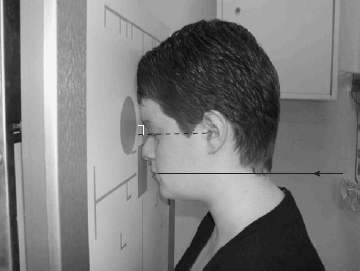

Mandible(PA)
Centering point:The central ray is directed perpendicular to the cassette and
centred in the midline at the levels of the angles of the
mandible.

Cassette Size:24cm x 30cm (12 x 10 ins)
Potrait
Exposure Factors:70kVp on
20mAs
FFD:100cm
Bucky/Grid:Moving or Stationary Grid
Filter:No
Collimation:Collimate to include area of interest
Pathologies:Fracture
Position of patient and cassette
- The patient sits facing the vertical Bucky or skull unit cassette
holder. Alternatively, in the case of trauma, the projection may
be supine on a trolley, giving an antero-posterior projection.
- The patient’s median sagittal plane should be coincident with
the midline of the Bucky or cassette holder. The head is then
adjusted to bring the orbito-meatal baseline perpendicular to
the Bucky or cassette holder.
- The median sagittal plane should be perpendicular to the
cassette. Check that the external auditory meatuses are equidistant
from the cassette.
- The cassette should be positioned such that the middle of an
18 x 24-cm cassette, when placed longitudinally in the
Bucky or cassette holder, is centred at the level of the angles
of the mandible.
Other projections:PA-Oblique
Demonstrates the region of the symphysis menti.